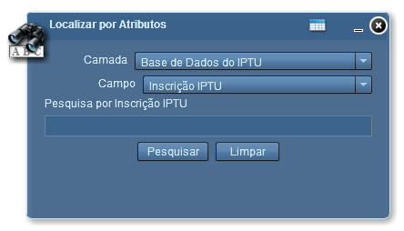

Localizar por Atributos
A ferramenta Localizar por Atributos realiza buscas baseada na descrição do atributo, camada e campo previamente selecionados.

Camada: define em qual camada será realizada a pesquisa;
Campo: define campo para camada selecionada;
Pesquisa: caixa de texto para descrição de pesquisa, onde sua descrição será alterada conforme as seleções anteriores;
Pesquisar: executa a pesquisa conforme definições de camada, campo e pesquisa;
Limpar: limpa caixa de pesquisa;
Abrir Data Grid: exibe a Lista de Resultados;
Fechar: fecha janela da ferramenta Pesquisar por Atributos;
Minimizar: minimiza janela da ferramenta Pesquisar por Atributos.